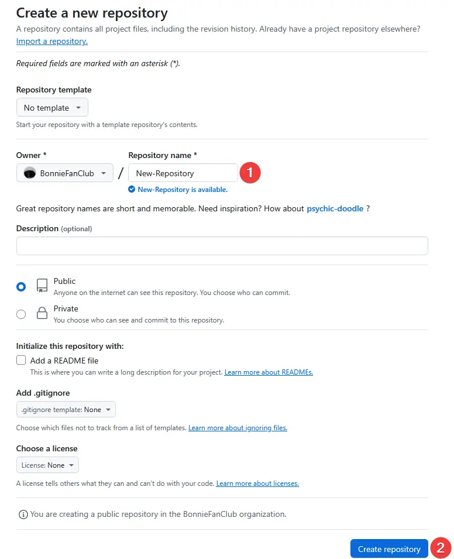

Création de répo
C'est quoi un répo et à quoi ça sert ?
Un GitHub Repository est un espace de stockage et de gestion de code source pour un projet donné. C’est l’élément le plus basique de GitHub. Il contient l’ensemble des fichiers, du code source, de la documentation et de tout autre contenu nécessaire pour ce projet.c
Comment crée un répo
Pour ce faire rendez-vous sur votre compte.
Ensuite il faut que vous cliquiez sur le plus et faites New Repository
Sur la page de création du répo Choissiez le nom (1), si il est publique ou privé vous pouvez rajouter un readme c'est un fichier "description" du projet, pour les autres options pas besoin de les changer. Ensuite faites Create Repository (2)
